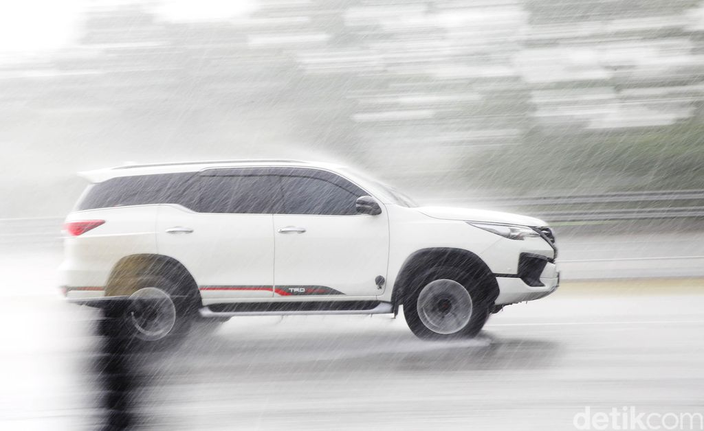

Jakarta - Mobil Mercedes-Benz (Mercy) mengalami kecelakaan sehingga menabrak 16 motor yang sedang berteduh di Jalan Sudirman, Jakarta Selatan, semalam. Menurut Polisi, pengendara Mercy itu kehilangan kendali karena kondisi hujan.
"Diduga karena kondisi hujan dan tidak bisa menguasai laju kendaraan," kata Kasubdit Gakkum Ditlantas Polda Metro Jaya AKBP Fahri Siregar lewat keterangannya, Minggu (6/12/2020)..
Fahri mengatakan mobil Mercy oleng ke kiri akibat kondisi hujan. Mobil kemudian menabrak 16 motor yang sedang berteduh di depan halte.
Saat hujan, pengendara berisiko besar mengalami kecelakaan. Kondisi jalan yang licin hingga efek aquaplanning menjadi faktor yang sering memicu kecelakaan lalu lintas.
Pengendara harus mengenali bahaya aquaplanning saat jalanan basah akibat terguyur hujan. Aquaplaning adalah suatu keadaan ketika ban tidak mendapat daya cengkeram akibat genangan air. Jadi seolah-olah ban berputar di atas genangan air. Tak hanya di mobil, pengguna motor pun bisa mengalami hal demikian.
Aquaplanning paling sering terjadi di jalan-jalan besar atau jalan-jalan di mana kendaraan sedang berada dalam kecepatan tinggi. Ketika melaju dengan kecepatan tinggi, kendaraan akan mengalami gaya angkat (lift force) saat melewati genangan air.
Perilaku pengendara yang tidak aman ketika hujan mengguyur menjadi penyebab kecelakaan karena faktor aquaplanning. Untuk itu, ketika hujan pengendara harus mengurangi laju kendaraan serta menjaga jarak pengereman. Harapannya kendaraan tetap bisa dikendalikan tanpa harus mengalami kecelakaan karena aquaplanning.